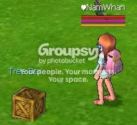
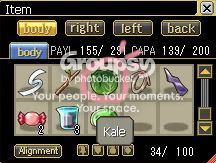
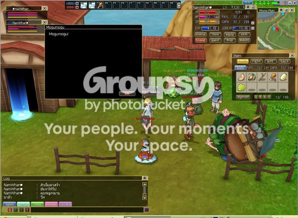
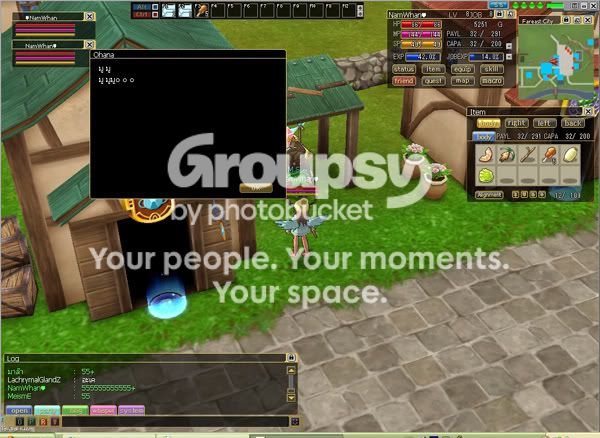
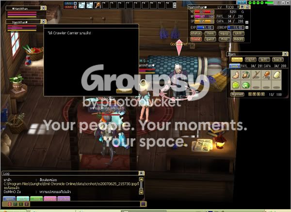

ข้อจำกัด2ข้อ (ต้องมีทั้งสองข้อนะคะ)
ก่อนอื่น เราต้องหาไอทั่มชื่อว่า Kale ก่อนค่ะ เปนรูปเหมือนกะหล่ำปรี ดรอปจากกล่องเลเวล7 หรือ กบเขียว
กล่องเลเวล7หาได้ตามแมปในฟาอีสค่ะ อย่างงี้ ส่วนกบเขียวอยู่แมปด้านล่างข้างเมืองฟาอีสค่ะ (ไปเสี่ยงตายถ่ายมา อิอิ)



tohtohtohx เขียน:มันคือ Gekko เลเวล 38 แม็พ Granary เพราะตอนโครสจำได้ว่าเคยตีตก
หน้าตาอย่างงี้ค่ะ (อย่าให้คนเอาของปลอมมาขายนะ)


อย่างที่สอง คือต้องมีค่าชื่อเสียงเกิน10ขึ้นไป ซึ่งก้อคือ...ทำเควสมาแล้วอย่างน้อย10ครั้ง โดยที่ยังไม่ตายเลย (ตายแล้วชื่อเสียงหดหาย)
เริ่มเควสที่ฟาอีส แมปโมโม เริ่มกะหนอนยักษ์นี่เลย


มันจะบอกให้เราไปตามหาลูกๆมันทั้ง4ตัว เราก้อไปตามที่มันบอกแหละ (ลูกมันจาดมเราฟุดฟิด)


พอคุยครบทุกตัว ก้อกลับไปหาแม่มันอีกทีค่ะ เมื่อคุยกะแม่มันเสดแล้ว ให้เข้าบ้านข้างๆไปหาคุนตาในนั้น คุยกะแกแล้วแกจะให้หนอนน้อยมาค่ะ


มีอยุ่หลายสี เขียว เหลือง แดง ฟ้า ขาว ม่วง และ แบบมีขน สุ่มได้เอานะคะ

ไม่ยากค่ะเควส แค่ลำบากตอนทำเควส10อัน กะหาไอ้ kale (ยากสุด) เนี่ยแหละ ^0^